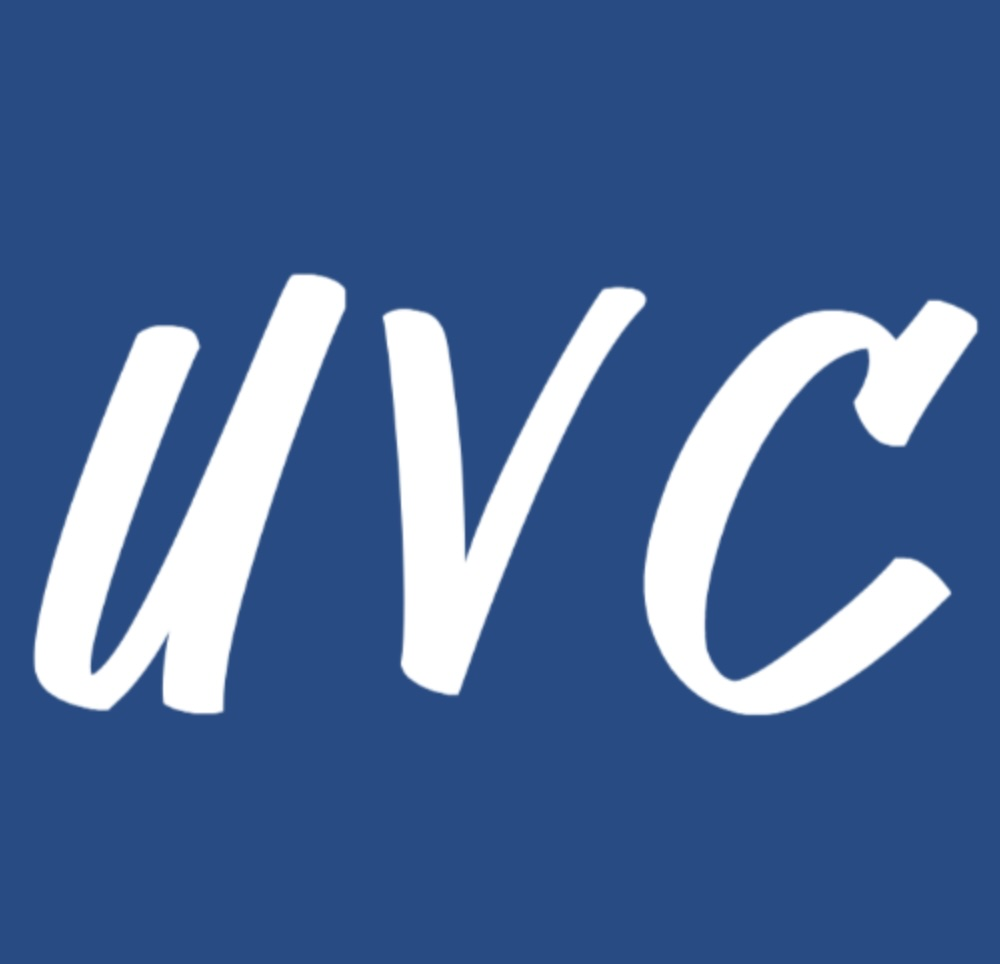
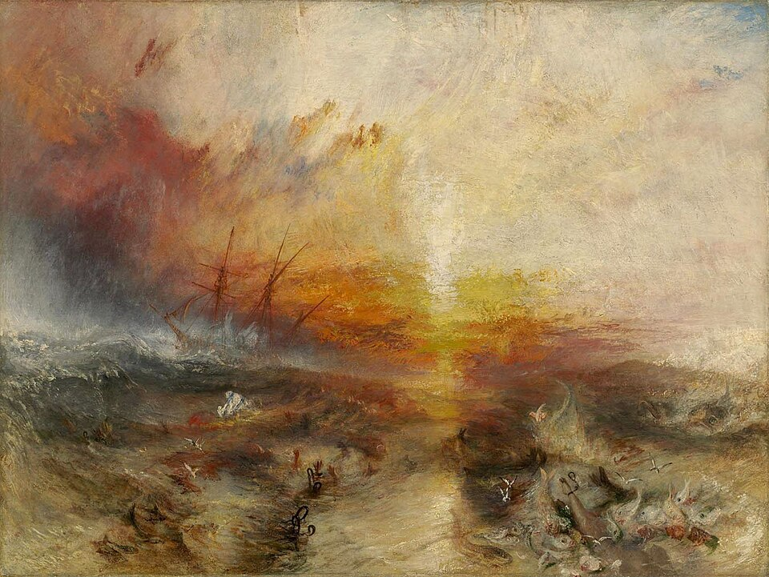
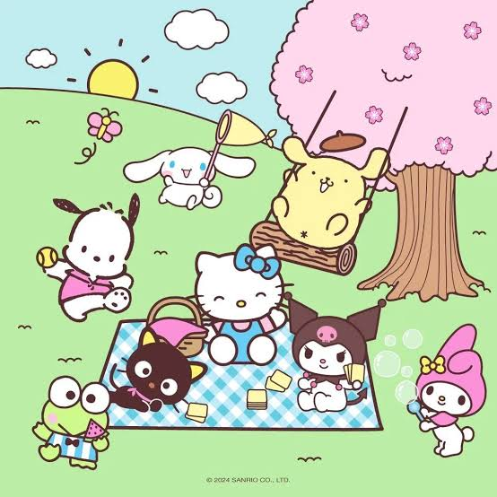
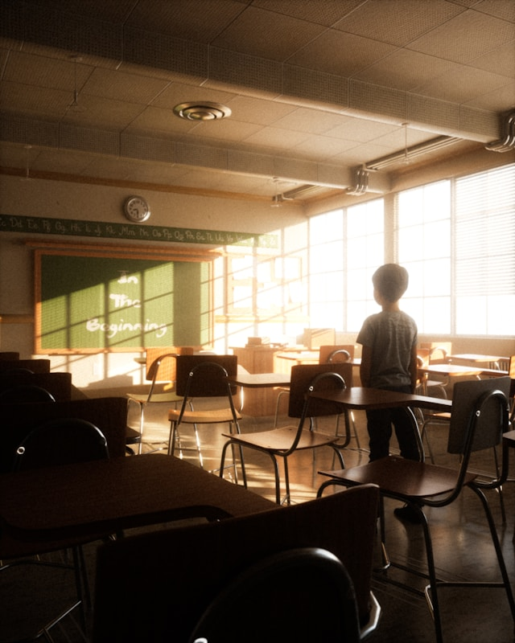
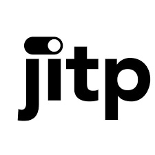

2021-present: Co-Director Undisciplining the Victorian Classroom
Since 2021, I have worked for Undisciplining the Victorian Classroom, starting from its inception as a Lesson Plan Developer, then an Associate Editor, and, now, a Co-Director. I have collaborated with instructors to bring over 20 collaborative and peer-reviewed lesson plans to publication for the field.

Fall 2026, Fall 2025: Global Nineteenth Century Literature and Culture (Department of English, University of Iowa)
This undergraduate course explores 19th century literature and culture from a global perspective and encourages students to explore the relationship between the past and our ppolitical present—especially with respect to historical legacies such as western imperialism and anti-colonialism. It juxtaposes contemporary media, such as the TV series Bridgerton and the film Saltburn, or film adaptations of the Brontë novels, with the 19th century books and poems that these pieces draw from. My digital teaching project, Brontëgram, is tied to this course.

Fall 2026: Global Asian Aesthetics (Department of English, University of Iowa)
This undergraduate course introduces students to the rise of three aesthetic and political categories rooted in contemporary Asian culture, in the wake of 19th century western imperialism: cuteness, techno-orientalism, and ornamentalism. It examines a range of cultural objects from the past and present, in addition to literature. My digital teaching project, Meet Cutes, is tied to this course.
Summer 2026, Spring 2026: Faculty Mentor and Pedagogy Workhop (Dickens Universe Project, University of California, Santa Cruz)
I was the faculty mentor for the development of a PhD student's research paper about the relationship between Charles Dickens' novels and contemporary Mexican literature and co-led (with Aeron Haynie) a four-day pedagogy workshop for graduate student instructors.

Spring 2026: Undisciplining in Victorian Studies and Beyond (Department of English, University of Iowa)
This graduate course explored the stakes of undisciplining as a methodology in Victorian Studies and other disciplines in Literary Studies. It prompted students to think critically about what kind of values should shape the way they approach literatures and cultures in the wake of western imperialism, while also focusing on concrete skills such as journal article writing. It featured a syllabus democratically co-created by the students.

Fall 2025: Through Other Eyes (Department of English, University of Iowa)
This advanced undergraduate honors seminar examined nineteenth-century British literature from anti-colonial, decolonial, and postcolonial writers and perspectives.

Fall 2025: Faculty Mentor (General Education Program (GEL), Department of English, University of Iowa)
I mentored and observed the teaching of two PhD candidates from English and two MFA candidates from the Iowa Writers' Workshop, in the General Education Program undergraduate course offered by our department.

Fall 2025: Undisciplining Today Workshop (North American Victorian Studies Association (NAVSA) Annual Conference)
I co-led (with Sophia Hsu) a workshop about the stakes of undisciplining in the classroom today, reflecting on changes since its emergence as a methodology in 2020.
Fall 2024, Spring 2025: Ethical Engagement: Whose Land? (College of Arts and Sciences, University of Virginia)
This general education undergraduate course examined the global histories of settler colonialism and indigeneity. Collaborative final assignments: student manifestos about future values and behaviors that they want to adopt; open letters to their parents about course themes; social media campaigns to raise awareness about course themes amongst their peers and teenagers; screenplays that reinvent Disney's Pocahontas. It featured a syllabus democratically co-created by the students in each section that I taught.
Fall 2019, Spring 2020: Writing About Digital Forms (Department of English, University of Virginia)
This first-year undergraduate composition course focused on Instagram, Wikipedia, and the Netflix series Black Mirror. Final assignments: transforming personal essays into Instagram narratives or podcast episodes; conducting academic research to write accessible entries in Wikipedia Edit-A-Thons; close-reading analyses comparing ethical concerns around technology in Black Mirror episodes with critical theories about power and surveillance.

2020: "Using Wikipedia in the Composition Classroom and Beyond: Encyclopedic “Neutrality,” Social Inequality, and Failure as Subversion," (Journal Article in The Journal of Interactive Technology and Pedagogy)
In 2020, I published "Using Wikipedia in the Composition Classroom and Beyond: Encyclopedic “Neutrality,” Social Inequality, and Failure as Subversion," based on the Wikipedia Edit-A-Thons that I hosted for the students in my digital writing course at the University of Virginia. I focus in part on the racial politics shaping the competing narratives about how the university was founded under the direction of Thomas Jefferson.